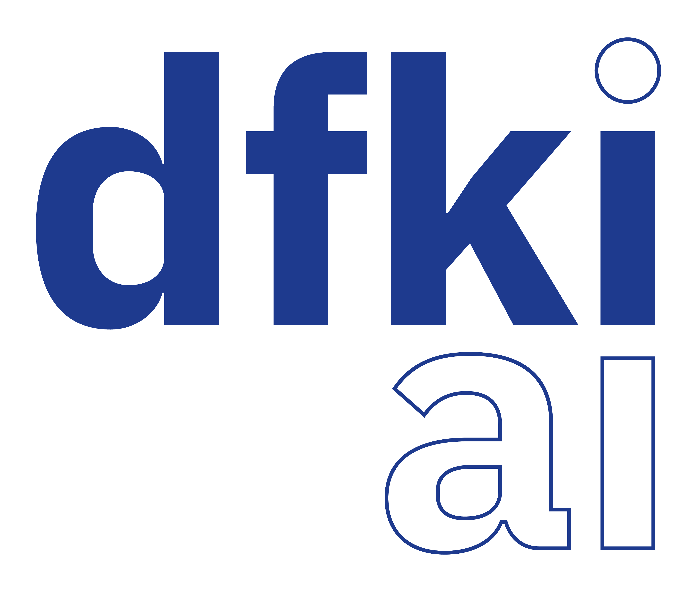
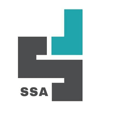

Education
Master in Data Science and Artificial Intelligence, Saarland University
GPA so far: 1.1 (German grading system)
Bachelor in Physics, University of Tehran
GPA: 2.14 (German grading system)
Experience
Research Assistant, Max Planck Institute for Informatics
In this role I work on inherently explainable neural networks.
Research Assistant, CISPA Helmholtz Center for Information Security
As a Research Assistant at CISPA, I conducted research on data provenance in generative AI, focusing on Large Language Models (LLMs). Specifically, I investigated methods for identifying and attributing pretraining data within these models.

Research Assistant, Deutsches Forschungszentrum für Künstliche Intelligenz (DFKI)
As a Research Assistant at DFKI, I worked on physics-informed neural networks and numerical methods for solving partial differential equations. My research focused on integrating physical principles into machine learning models, as well as developing and evaluating computational techniques for efficiently solving complex PDEs.
Research and Development Specialist, Binasanat Veera
As a member of the Research and Development team at Bina Sanaat Veera, I worked on developing computer vision–based solutions for the pharmaceutical industry. My responsibilities included designing image processing techniques for automated inspection and quality control, helping improve the accuracy and efficiency of pharmaceutical manufacturing workflows.

Business Data Analyst, Sehat Sanjesh Aria
At Sehat Sanjesh Aria, I was responsible for analyzing financial and operational data, developing interactive dashboards, and generating insights to support strategic decision-making. My work involved transforming complex datasets into clear visualizations and actionable reports for stakeholders.
Publications

Practical Identification of Training Datasets in Large Language Models
Under Review · NeurIPS 2026
Abstract
This research aims to develop a practical black-box Dataset Inference method for determining whether an LLM was trained on a suspect dataset by estimating per-token probabilities from label-only generated outputs, avoiding the need for gray-box probability access. It also replaces rigid p-value testing with e-value–based sequential testing, enabling anytime-valid and adaptive evidence accumulation as more samples are queried. Together, these methodological advances allow dataset inference to be applied to real-world LLM APIs under fully black-box access.

A 1D-CNN deep learning framework for seismic collapse prediction of jacket offshore platforms with Bayesian neural architecture search
Ocean Engineering Journal · 2026
Abstract
This study proposes a methodology for seismic limit-state and collapse prediction of Jacket Type Offshore Platforms using a 1D-CNN trained directly on earthquake accelerogram time-series data. The study develops a systematic model-selection framework based on Bayesian optimization to tune the neural architecture and hyperparameters, reducing reliance on manual trial-and-error. It further uses nested cross-validation for unbiased performance evaluation and introduces a stochastic optimization approach for stratified K-fold dataset preparation based on incremental dynamic analysis. The optimized 1D-CNN framework is compared with tuned MLP and SVM models and applied to estimate collapse fragility curves for a case-study offshore platform.
Teaching
Tutor for Trustworthy Machine Learning
Tutor for Neural Networks, Theory and Implementation
Tutor for Statistics with R
Teaching Assistant for Programming with Python
Projects
CISPA European Championship Hackathon – Backend API
Developed and maintained the backend API for CISPA’s European Championship Hackathon submission platform, supporting hundreds of participants. Designed for reliability and scalability, resulting in less than one minute of downtime throughout the event.